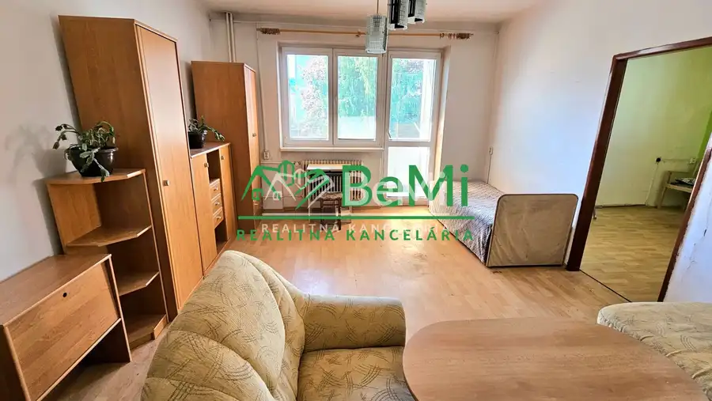
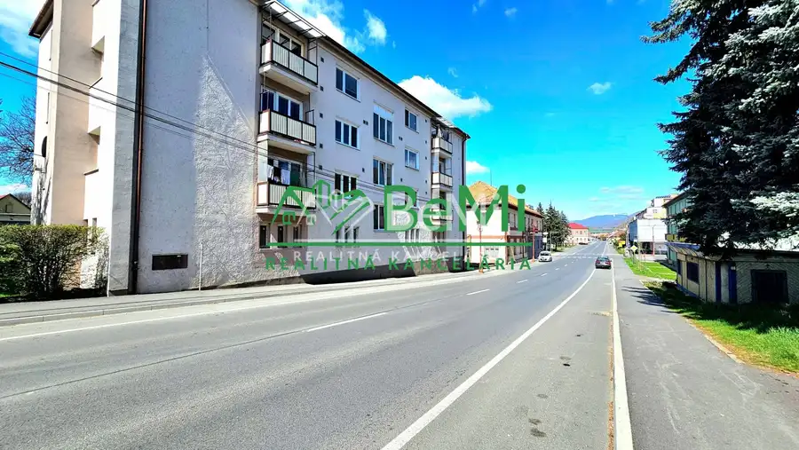
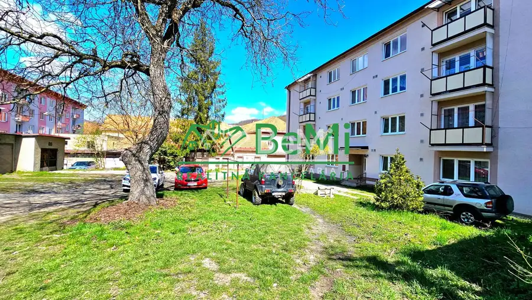
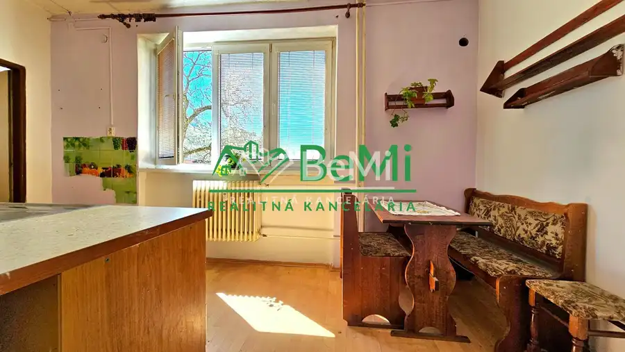
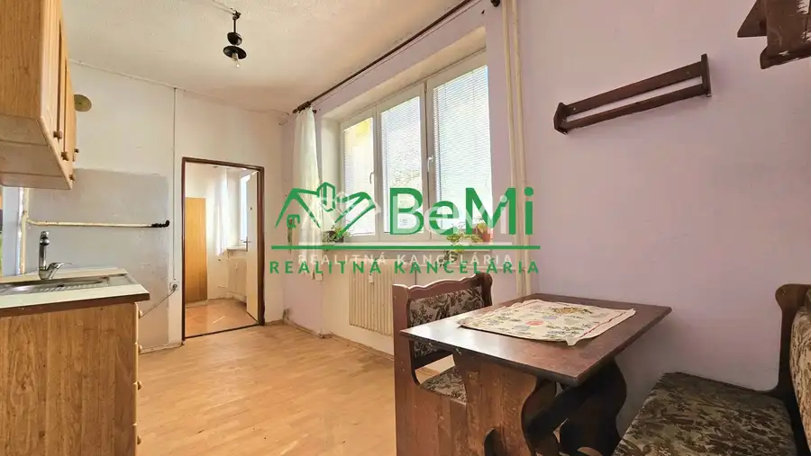
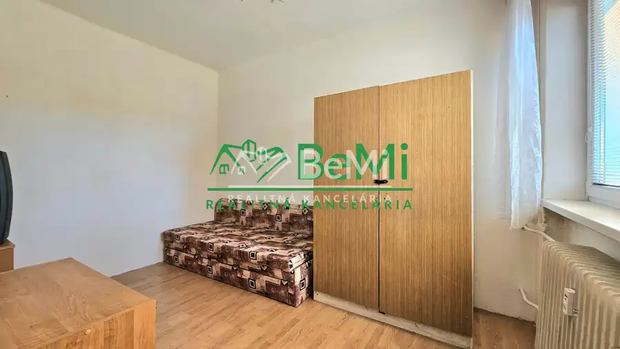
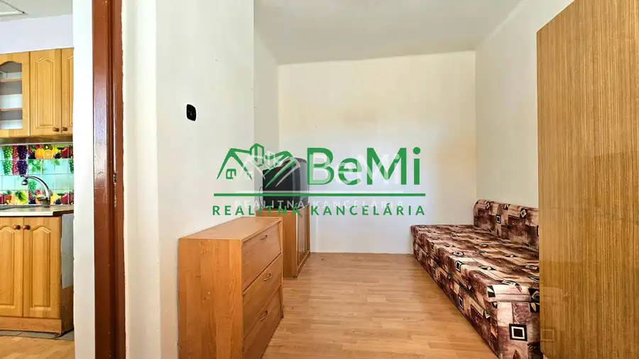
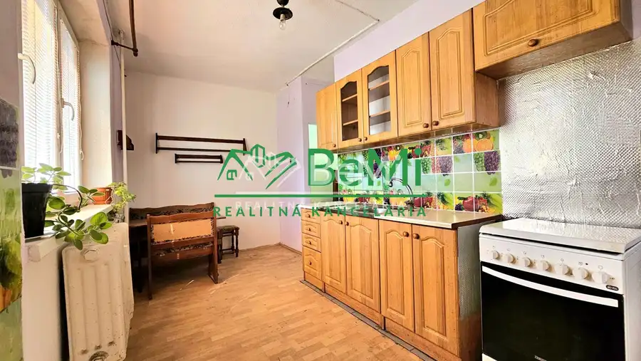
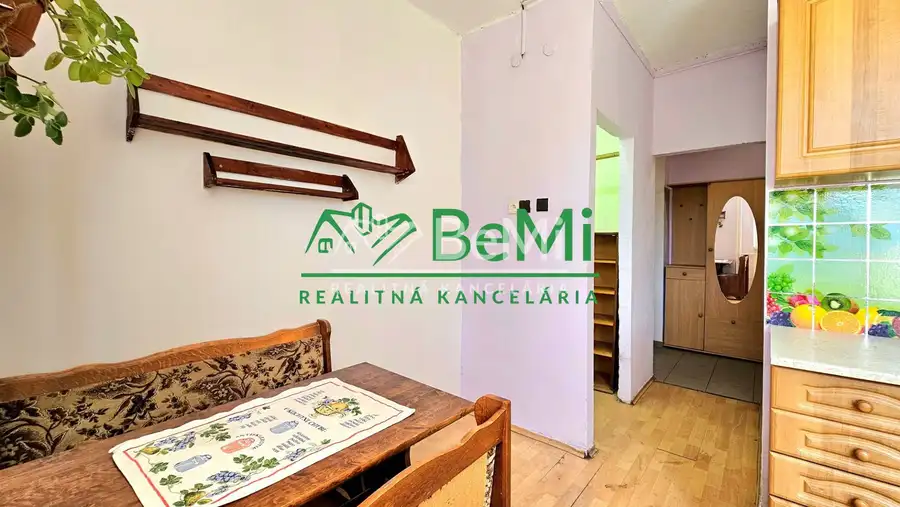

3-izbový byt s balkónom v Hnúšti za 50 000€ - na predaj
Hnúšťa









- Dispozícia3-izbový
- Plocha70.21 m²
- Poschodie1. z 3
- StavPôvodný stav
- VlastníctvoOsobné
O nehnuteľnosti
ID:184-113-ANOEVIDEO TU: youtube.com/watch?v=xAlLwax8fw4Exkluzívne Vám ponúkame na predaj 3-izbový byt s balkónom v centre mesta Hnúšťa, na Hlavnej ulici. Byt sa nachádza v zrekonštruovanom tehlovom bytovom dome na 1. poschodí z troch, jeho úžitková plocha je 70,21m² + murovaná pivnica, ktorá je najväčšou v bytovom dome.Byt je v pôvodnom stave, čo umožňuje novému majiteľovi rekonštrukciu podľa vlastných predstáv. Všetky miestnosti sú príjemné a svetlé.Bytový dom je postavený z tehál, disponuje vlastným plynovým kotlom umiestneným v suteréne, odkiaľ je zabezpečené ústredné vykurovanie do každého bytu. Ohrev vody je zabezpečený vlastným elektrickým bojlerom umiestneným v kúpeľni.Bytový dom prešiel rekonštrukciou, bola vymenená strecha, zateplené bočné strany bytového domu a upravená fasáda, osadené plastové okná, plastové vchodové dvere, vymenené stúpacie zariadenia, upravené balkóny. Bytový dom má veľmi príjemné vnútorné nádvorie, kde je zabezpečené aj parkovanie pre obyvateľov bytového domu.Mesto Hnúšťa ponúka kompletnú občiansku vybavenosť. Okrem iného sa tu nachádza základná škola, materská škola, hypermarkety LIDL, TESCO, potraviny, cukráreň, zmrzlina, železničná stanica, autobusová stanica, pizzerie, reštaurácie, lekári, mestský park a iné. Susedstvo ako aj okolie je veľmi slušné a príjemné.Byt je v osobnom vlastníctve, bez akýchkoľvek tiarch, s možnosťou financovania aj na úver.VIDEO SI VIETE POZRIEŤ SKOPÍROVANÍM TOHTO LINKU DO PREHLIADAČA: youtube.com/watch?v=xAlLwax8fw4Cena 50 000€. PRÍPADNE VÝMENA ZA 1-IZBOVÝ BYT V OKRESE BREZNO + doplatok. V prípade záujmu o obhliadku ma neváhajte kontaktovať na tel.č.:0944 202 205 alebo mailom na: ondrisova@realitybemi.skProstredníctvom nášho finančného poradcu Vám pomôžeme s financovaním kúpy tejto nehnuteľností. NAŠE CENY SÚ VRÁTANE PROVÍZIE ZA KOMPLETNÝ SERVIS A SÚ SCHVÁLENÉ MAJITEĽOM.
Parametre
- Cena vrátane energií
- Nie
- Druh
- 3 izbový byt
- Dátum zverejnenia
- 03. 09. 2025
- Podlažie
- 1
- Počet izieb / miestností
- 3
- Počet nadzemných podlaží
- 3
- Stav nehnuteľnosti
- Pôvodný stav
- Telekomunikácie
- Internet
- Typ
- Predaj
- Typ konštrukcie
- Tehlová
- Vlastníctvo
- Osobné
- Vybavenie
- Balkón
- Vykurovanie
- Ústredné
- Úžitková plocha
- 70.21 m²